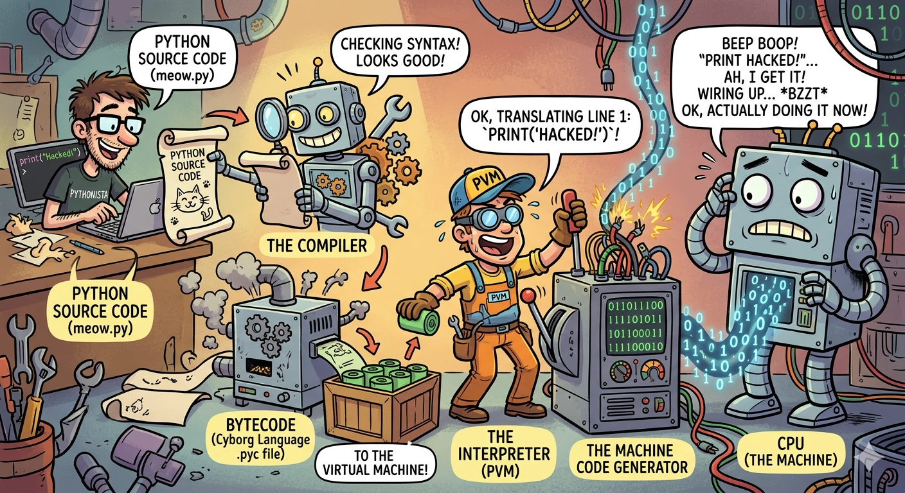

Module 1: Introduction to Programming & Python¶
🎉 Welcome! No prior tech experience needed. If you've ever used a microwave, you're already halfway there.
🤔 What Even IS Programming?¶
Let's start with a wild fact:
Mind-blowing fact 🤯
Your computer — that fancy, expensive machine — is, at its core, just a box of switches.
That's it. Millions of tiny switches that are either ON or OFF.
Computers don't understand English. They don't understand Hindi. They don't even understand "please".
They only understand two things:
| What the computer sees | What it means |
|---|---|
1 |
Switch ON ⚡ |
0 |
Switch OFF 💤 |
This is called Binary — and it looks like this:
You know what that says? It says "Hello". 😅
Imagine having to write that every time you wanted to say hi to someone. Exhausting, right?
🌉 The Bridge Between Humans and Machines¶
So here's the problem:
- Humans think in words, logic, and ideas 🧠
- Computers think in 0s and 1s 🤖
That gap needed a solution — and that solution is a Programming Language.
Think of it like this 💡
A programming language is like a translator standing between you and the computer.
You say: "Hey, add these two numbers."
The translator converts it to: 01001000 10110010...
The computer does it instantly. ✅
You write something like this:
And the computer figures out the rest. No binary required from your side. 🙌
🌍 Why Do We Even Need Programming?¶
Here's the honest truth — computers have two superpowers that humans simply don't have:
A computer can do billions of calculations per second.
You? Maybe 2-3 per second (on a good day, with coffee ☕).
A computer never gets bored, never gets tired, and never makes "oops I added wrong" mistakes.
You? After the 50th repetitive task... we all know what happens. 😴
So what does this mean in real life?¶
- 📱 It runs your phone, your apps, your Instagram feed
- 🚗 It powers self-driving cars and GPS navigation
- 🌦️ It processes massive weather data to predict tomorrow's rain
- 📊 It handles stock markets processing millions of trades per second
- 🔁 It automates boring, repetitive tasks — so you can focus on the creative stuff
The big idea
You aren't just "typing code". You are solving problems and automating the boring stuff so humans can do what they do best — think, create, and innovate.
🗺️ The Big Picture¶
Here's a visual to tie it all together 👇
.png)
🐍 So Why Python?¶
There are hundreds of programming languages out there — Java, C++, JavaScript, and more. So why are we learning Python?
Because Python reads almost like plain English. Compare:
Same result. Very different experience. Python wins for beginners — every time. 🏆
Fun fact 🐍
Python is named after the British comedy show Monty Python's Flying Circus — not the snake. The creator wanted the language to be fun. Mission accomplished.
🐍 What is Python?¶
Python is a high-level programming language — meaning it's designed to be easy for humans to read and write, not just machines.
- Like a Translator: Python acts as a bridge between you and the computer. You write instructions in "English-like" code, and Python handles the translation to machine language behind the scenes.
- General Purpose: Python isn't locked into one field. It powers:
- 🌐 Web development (Django, Flask)
- 🤖 AI & Machine Learning (TensorFlow, PyTorch)
- 📊 Data Science (Pandas, NumPy)
- 🗺️ GIS & Spatial Analysis (GeoPandas, ArcPy)
- ⚙️ Automation & scripting
- Beginner-Friendly: Its syntax (the rules for writing code) is dramatically simpler than languages like C++ or Java.
🌍 Why is Python So Popular (Especially in GIS)?¶
Python's popularity in the GIS world isn't just about being easy to learn. It has become the "glue" that connects data, software, and advanced science.
While standard Python is great, its real power comes from thousands of free libraries — pre-written code that handles complex tasks in just a few lines.
1. ⚡ Automation — Do More Work in Less Time¶
In GIS, many tasks are repetitive — processing hundreds of maps, converting formats, applying the same styling over and over.
Click the same buttons. Again. And again. For every single file. 500 satellite images = 500 times of manual clicking. Good luck. 🫠
Write one script. Run it once. All 500 images processed automatically. Go grab a coffee while the computer does the work. ☕
Real-world example 🛰️
You have 500 satellite images and need to:
- Clip them to a specific area
- Convert their formats
- Apply the same styling
A Python script handles all 500 in a few seconds. No clicking required.
2. 🧰 Powerful GIS Libraries — Pre-built Tools¶
Python has special libraries (toolkits) built specifically for GIS work.
| Library | What it does |
|---|---|
| ArcPy | Used inside ArcGIS |
| PyQGIS | Used inside QGIS |
| GeoPandas | Works like Excel, but for maps 🗺️ |
| GDAL | Reads & writes spatial data formats |
Real-world example 🏘️
Want to find all villages within 5 km of a river? With these libraries, that's a few lines of Python — instead of complex manual steps.
3. 🔌 Works Inside Major GIS Software¶
Most GIS software already ships with Python built in. You can use it directly inside tools you already know.
- ArcGIS Pro
- QGIS
- GRASS GIS
This means you can create custom tools, automate workflows, and build your own GIS applications — all from within the software.
Real-world example 🏙️
A city planner builds a custom button in QGIS that:
- Loads traffic data
- Analyzes congestion
- Generates a report — instantly
4. 📦 Handles Big & Complex Data Easily¶
GIS often deals with massive datasets — satellite images, GPS tracks, population records. Python helps you clean, analyze, and visualize all of it.
Real-world example 🌊
Disaster management teams use Python to:
- Analyze flood zones
- Predict affected areas
- Plan evacuation routes
5. 🌐 Huge Community & Learning Support¶
Python has one of the largest developer communities in the world. If you get stuck:
- Tutorials are everywhere
- Forums already have your answer
- Tons of free resources available
Stuck on an error? 🔍
If you hit a bug while using GeoPandas, chances are someone already solved it and posted the answer on Stack Overflow. Just Google the error message — seriously, it works.
.png)
🔧 Bonus: How Python Works Under the Hood (For the Curious)
You don't need this to start coding — but if you're curious about what happens when you hit "Run", here it is.
What is Bytecode?¶
When you run a .py file, Python doesn't execute your text directly. It first translates it into Bytecode (stored in .pyc files) — a low-level set of instructions that's easier for the Python engine to process, but not yet the binary your CPU understands.
Is Python Compiled or Interpreted? (It's Both 🤯)¶
- Step 1 — Compilation: Python automatically compiles your source code into Bytecode.
- Step 2 — Interpretation: The Python interpreter reads that Bytecode line-by-line and executes it.
We call it "interpreted" because the compilation happens invisibly — you never manually build anything.
The Python Virtual Machine (PVM)¶
The PVM is the heart of the Python engine. It takes Bytecode and converts it into the final machine code your specific computer can run.
Why Python is Platform Independent¶
- Write a script on Windows → run it on Mac or Linux without changing a single line.
- The Bytecode is universal — it looks the same on every system.
- Only the PVM needs to be different per OS. As long as the right PVM is installed, your code runs anywhere.
What is a Python Interpreter?¶
The interpreter reads and executes your Python code directly, line-by-line in real-time. Here's what happens step-by-step when you run python myscript.py:
- Lexical Analysis (Tokenization): Breaks your code into small meaningful pieces — keywords, variables, symbols.
- Syntax Check (Parsing): Checks your code follows Python's grammar. A missing colon? It stops here with a
SyntaxError. - Bytecode Compilation: Translates your readable code into Bytecode.
- Execution (PVM): The PVM converts Bytecode into machine code (0s and 1s) your CPU actually runs.
Types of Python Interpreters¶
| Interpreter | What's special |
|---|---|
| CPython | The standard version from python.org (written in C) |
| PyPy | Faster — uses Just-In-Time (JIT) compilation |
| Jython | Runs Python on the Java platform |
| MicroPython | Tiny version for microcontrollers & small hardware |
Interpreter vs. Compiler¶
| Feature | Interpreter (Python) | Compiler (C++) |
|---|---|---|
| Translation | Line-by-line while running | Entire file at once, before running |
| Output | No separate file created | Generates a standalone .exe |
| Debugging | Stops at first error found | Shows all errors after compiling |
| Speed | Generally slower | Generally faster |

🧱 Fundamental Building Blocks of Coding¶
Whether you end up building websites, AI models, or GIS tools — these are the universal building blocks of ALL programming. Learn them once in Python, and you can pick up any other language much faster.
We call them the "Big 7" 🎯
1. 📦 Variables & Data Types — The Storage¶
Think of a variable as a labeled box where you store information.
city_name = "New York City" # 📝 String — text
parcel_count = 105 # 🔢 Integer — whole number
latitude = 40.7128 # 🌊 Float — decimal number
is_within_boundary = True # ✅ Boolean — True or False
| Type | What it stores | Example |
|---|---|---|
| String | Text | "Riverside Road" |
| Integer | Whole numbers | 105 |
| Float | Decimal numbers | 40.7128 |
| Boolean | Yes/No, True/False | True |
Real-world analogy 🗂️
Imagine you're filling out a form. Name → String. Age → Integer. GPA → Float. Are you a student? → Boolean. Same idea!
2. 🗄️ Data Structures — The Organizers¶
What if you have a collection of things to store? That's where data structures come in.
# List — ordered sequence (like a numbered to-do list)
waypoints = ["Point_A", "Point_B", "Point_C"]
# Dictionary — key-value pairs (like a real dictionary: word → meaning)
city_info = {"City": "Mumbai", "Population": 20000000}
Think of it like this 🧺
- A List is like a shopping list — items in order, one after another.
- A Dictionary is like a contact book — you look up a name (key) to get a phone number (value).
3. ➕ Operators — The Math & Logic¶
These are the tools for calculating and comparing things.
# Arithmetic — basic math
area = length * width
distance = total_km / days
# Comparison — asking questions
10 > 5 # True — is 10 greater than 5?
"a" == "b" # False — are these equal?
5 != 3 # True — are these NOT equal?
# Logical — combining conditions
is_dry = True
is_outside_city = True
can_build = is_dry and is_outside_city # True only if BOTH are true
4. 🧠 Control Flow: If/Else — The Decision Maker¶
This is where your code starts to think. Based on a condition, it takes different paths.
elevation = 1200
if elevation > 1000:
color = "brown" # 🟤 High altitude
else:
color = "green" # 🟢 Low altitude
Real-world analogy 🚦
It's exactly like a traffic light. If the light is green → go. Else if it's yellow → slow down. Else → stop. Your code makes decisions the same way.
5. 🔁 Loops — The Task Repeater¶
Computers never get tired. Loops let you repeat a task without writing the same code 100 times.
# For Loop — repeat for each item in a list
shapefiles = ["roads.shp", "rivers.shp", "parks.shp"]
for file in shapefiles:
clip_to_boundary(file) # Do this for EVERY file automatically
# While Loop — keep going until a condition is met
errors_found = True
while errors_found:
errors_found = check_for_errors() # Keep checking until clean ✅
Why this is powerful 💪
Imagine you have 500 files to process. Without a loop: 500 lines of code. With a loop: 3 lines. That's the magic.
6. ♻️ Functions — The Reusable Tool¶
Instead of writing the same logic over and over, you wrap it in a function and call it whenever you need it.
def calculate_buffer(location, distance):
# All the complex logic lives here
result = location + distance # simplified example
return result
# Now use it anywhere, anytime!
buffer_A = calculate_buffer("Point_A", 500)
buffer_B = calculate_buffer("Point_B", 1000)
The coffee machine analogy ☕
A function is like a coffee machine. - You give it beans (Input) - It does all the work inside (Process) - You get coffee (Output)
You don't need to know how it works inside — you just press the button.
7. 🛡️ Error Handling — The Safety Net¶
Code breaks. Files go missing. Data has typos. Error handling makes sure your program doesn't crash dramatically when something goes wrong.
try:
open("city_map.shp") # Try to open the file
except FileNotFoundError:
print("Oops! File not found. Check the path and try again.") # Graceful message
Without error handling 💥
Your entire program crashes with a scary red error message.
With error handling ✅
Your program catches the problem, shows a friendly message, and keeps running.
🗺️ The Big 7 — Visual Summary¶
.png)
🎯 Quick Recap¶
| Concept | What it does | One-liner analogy |
|---|---|---|
| Variables | Store data | Labeled boxes 📦 |
| Data Structures | Organize collections | Shopping list & contact book 🗂️ |
| Operators | Math & comparisons | Calculator + logic 🧮 |
| If/Else | Make decisions | Traffic light 🚦 |
| Loops | Repeat tasks | Robot doing chores 🤖 |
| Functions | Reusable code blocks | Coffee machine ☕ |
| Error Handling | Catch & handle failures | Safety net 🛡️ |
You're ready! 🚀
These 7 concepts are the entire foundation of programming. Everything else — AI, web apps, GIS tools — is just these 7 things combined in clever ways. In the next modules, we'll deep dive into each one with hands-on Python code.